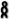
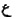
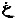
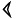
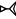

Jeff A. Benner
Ayin dan Ghayin
Shin, Sin dan Samehh
Vav dan Yud
Ayin dan Ghayin
Sementara alfabet Ibrani Modern terdiri dari dua puluh dua huruf, bukti menunjukkan bahwa ada huruf tambahan dalam alfabet Semit dan Ibrani awal. Salah satu bahasa Semit kuno Kanaan adalah Ugarit. Bahasa kuno ini hampir identik dengan bahasa Ibrani dalam Alkitab namun, alih-alih terdiri dari dua puluh dua huruf, malahan memiliki dua puluh delapan huruf. Salah satu perbedaan utama antara Ugarit dan Ibrani adalah huruf tambahan ghayin (), yang tidak ada dalam bahasa Ibrani. Bukti, seperti yang akan dipaparkan di sini, menunjukkan bahwa huruf "ghayin" pada awalnya ada dalam teks Ibrani dalam Alkitab, namun pada suatu saat di masa lalu, huruf ghayin mulai ditulis dengan huruf ayin ( , ע in bahasa Ibrani modern).
, ע in bahasa Ibrani modern).
Satu Kata - Dua Makna
Bukti terkuat untuk ghayin yang hilang dapat ditemukan dalam dua makna yang berbeda dari satu kata Ibrani. Sebagai contoh, kata Ibrani רע (ra) bisa berarti "teman" atau "buruk". Di masa lalu, kata Ibrani  , yang ditulis sebagai רע dalam alfabet Ibrani modern dan diidentifikasi dalam Kamus Strong sebagai # 7453, berarti "teman" dan kata Ibrani , yang juga ditulis sebagai רע dalam alfabet Ibrani modern dan diidentifikasi dalam Kamus Strong sebagai # 7451, berarti "buruk". Berikut adalah beberapa contoh lain dari kata-kata Ibrani yang dieja dengan ayin yang memiliki lebih dari satu makna.
, yang ditulis sebagai רע dalam alfabet Ibrani modern dan diidentifikasi dalam Kamus Strong sebagai # 7453, berarti "teman" dan kata Ibrani , yang juga ditulis sebagai רע dalam alfabet Ibrani modern dan diidentifikasi dalam Kamus Strong sebagai # 7451, berarti "buruk". Berikut adalah beberapa contoh lain dari kata-kata Ibrani yang dieja dengan ayin yang memiliki lebih dari satu makna.
| עול | infant | wicked | ||
| יעל | profit | goat | ||
| ענה | heed | answer | ||
| עיף | weary | darkness | ||
| עור | skin | blind | ||
| עיר | colt | city | ||
| רעה | shepherd | break | ||
| שער | hair | storm | ||
| ערב | weave | dark | ||
| ערם | naked | crafty | ||
| ערף | neck | rain |
Sementara satu kata dengan dua makna mungkin tidak aneh bagi kita karena bahasa Inggris dipenuhi dengan kata-kata dengan lebih dari satu makna, ini adalah kejadian yang sangat jarang terjadi dalam bahasa Ibrani dan ketika hal itu terjadi, ini menunjukkan bahwa mereka pada awalnya adalah dua kata yang berbeda.
Jika ternyata huruf ayin mewakili dua huruf kuno, bagaimana kita bisa menentukan huruf mana yang pada awalnya digunakan dalam kata tertentu. Sebagai contoh, apakah ayin dalam kata Ibrani סעה (Strong's # 5584) yang awalnya dieja dengan ayin atau ghayin? Bila kita membandingkan arti kata-kata dalam tabel di atas, Anda akan melihat bahwa kata-kata di kolom paling kanan semuanya terkait dengan kegelapan (gelap, badai, awan, hujan, buta) dan kejahatan (jahat, kambing, kota, buruk , licik). Seperti kata Ibrani סעה berarti "badai", yang terkait dengan gagasan "kegelapan," kita dapat menyimpulkan bahwa itu awalnya dieja dengan seekor ghayin. Berikut adalah beberapa kata lain yang kemungkinan besar ditulis dengan ghayin.
| עב | cloud | |
| עוב | cloud | |
| עוה | perverse, crooked | |
| עות | crooked | |
| עז | goat | |
| עקל | crooked | |
| עקש | crooked |
Bukti perubahan huruf secara Modern dan Historis
Pergeseran dari ghayin ke ayin ini tidak unik dengan kata-kata kuno, dan bahkan modern. Seiring waktu kata-kata dan akarnya berevolusi. Untuk menunjukkan ini, mari kita lihat sebuah kata bahasa Inggris dan evolusinya. Kata "napkin {serbet}" dan "apron {celemek}" berasal dari kata "map {peta}". Pada zaman kuno peta ditulis pada lembaran kain yang disebut "map {peta}". Pergeseran huruf yang sangat umum saat kata-kata berkembang adalah dari "m" ke huruf "n" dan sebaliknya. Kata "serbet", selembar kain, adalah kata "map" dengan akhiran "kin" yang ditambahkan padanya. Kata bahasa Inggris kuno "napron", juga selembar kain yang diikat di sekitar tubuh, adalah kata "map" (dengan pergeseran dari "m" ke "n") dengan akhiran "ron" ditambahkan ke dalamnya. Seperti yang akan kita lihat pada kata yang terakhir ini sebagai "a" napron, "n" beralih ke "a" dan menjadi "an"apron ".Pergeseran huruf yang sama ini dapat dilihat berkali-kali dalam evolusi kata-kata Ibrani. Dalam teks alkitabiah kita memiliki akar induk kuno זב (zav) yang berarti "kuning". Dari akar induk ini diturunkan dua akar anak, זהב (zahav, Strong's # 2091) yang berarti "emas" dan זוב (zuv, Strong's # 2101) yang berarti "pus {nanah}", berwarna kuning. Kata Ibrani lainnya, צהב (tsahav, Strong's # 6669), juga memiliki arti "kuning", namun tidak memiliki hubungan dengan akar induk kuno צב (tsav, Strong's # 6632) yang berarti "dinding". Dari bukti ini, kita dapat menyimpulkan bahwa צהב adalah bentuk akar yang berevolusi זהב, karena צ (ts) dan ז (z) memiliki suara yang sangat mirip.
Gagasan tentang huruf ghayin yang beralih ke ayin tidak unik dalam kosakata Ibrani, sebenarnya sangat umum, kecuali bahwa dalam kasus ini, setiap penggunaan ghayin bergeser ke ayin.
Transliterasi bahasa Yunani dari Ghayin
Bukti tambahan tentang keberadaan huruf ghayin adalah transliterasi bahasa Yunani dari nama-nama Ibrani. Ketika Alkitab Ibrani diterjemahkan ke bahasa Yunani sekitar 2.000 tahun yang lalu, penerjemah tersebut menerjemahkan nama-nama Ibrani ke dalam bahasa Yunani. Contoh transliterasi sebuah nama ke dalam bahasa lain dapat dilihat dalam nama Ibrani אדם, yang ditransliterasikan menjadi huruf Romawi sebagai "Adam."
Ketika kita memeriksa nama-nama Ibrani yang mengandung huruf Ibrani ayin, kita menemukan dua metode yang berbeda untuk transliterasi huruf tersebut. Tabel 1 di bawah ini berisi nama Ibrani dimana ayin tidak ditransliterasikan (huruf Ibrani ayin diam dan diwakili oleh apostrof dalam transliaterasi bahasa Inggris). Tabel 2 berisi nama Ibrani dimana ayin ditransliterasikan dengan huruf Yunani Gamma (Γ atau γ).
| Hebrew | Greek | English | ||
| בעל (ba'al) | Βααλ (Baal) | Ba'al | ||
| בלעם (bil'am) | Βαλααμ (Balaam) | Bala'am | ||
| עשתרות ('ashtarot) | Ασταρωθ (Astaroth) | 'Ashtaroth |
| Hebrew | Greek | English | ||
| עמרה ('amorah) | Γομορραν (gomorras) | Gomorrah | ||
| עזה ('azzah) | Γαζαν (gazan) | Gaza | ||
| פעור (pe'or) | Φογορ (pogor) | Peor |
Hanya orang Ibrani yang kehilangan Ghayin
Bahasa Arab, bahasa Semit modern lainnya, berhasil mempertahankan ayin dan ghayin sebagai huruf terpisah. Huruf Arab  mewakili ayin, sedangkan  mewakili ghayin. Bahasa Ugarit kuno juga membuat perbedaan antara ayin, ditulis sebagai , dan ghayin, ditulis sebagai .Edward Horowitz Berikut ini adalah kutipan dari buku Edward Horowitz Bagaimana Bahasa Ibrani berkembang, oleh penerbitan KTAV.
Bahasa Ibrani kuno memiliki dua ע yang berbeda; terdengar. Suara ini terwakili dalam alfabet kami dengan huruf ע ;. Yang satu adalah keras, berat ע ;. Ini sekarang hilang, dan tidak lagi digunakan dalam bahasa Ibrani. Yang lainnya lunak, ringan ע. Ketika orang-orang Yahudi Yunani menerjemahkan Alkitab ke dalam bahasa Yunani, mereka harus menerjemahkan nama-nama Ibrani yang memiliki kata-kata kasar; di dalamnya. Mereka menggunakan gamma huruf Yunani untuk itu - jadi Anda bisa membayangkan betapa kerasnya suara yang seharusnya. Ini "ע; gayin" bahkan telah sampai ke bahasa Inggris. Nama tempat Ibrani עמרה dan עזה keduanya memiliki ע kuat ini; ditransliterasikan ke dalam bahasa Yunani sebagai Gommora dan Gaza. Bukankah bentuk aneh dari nama tempat ini dalam bahasa Inggris pernah membuat Anda bingung? Pada abad pertengahan ada yang diekspor dari Gaza sebuah kain tipis yang secara alami diberi nama "gauze {kain kasa}" setelah kota asalnya.
Kebetulan, bahasa Arab yang mirip bahasa Ibrani yang dekat, masih mengucapkan dua ע ini, berbeda, dan yang lebih banyak menulisnya secara berbeda.
Sepotong pengetahuan sederhana tentang keberadaan dua ע yang berbeda ini, harus menjernihkan banyak makna berbeda yang membingungkan yang sering Anda temukan di akar yang memiliki ע; di dalamnya.
Apa arti semua ini untuk mempelajari bahasa Ibrani?
Dalam mempelajari bahasa Ibrani kuno dan alfabet kita mulai mempelajari bahasa pada akar yang paling sederhana, huruf-hurufnya. Setiap huruf adalah gambar yang mewakili sebuah makna. Bila huruf digabungkan untuk membentuk akar, masing-masing huruf memberi arti pada akar. Dengan mempelajari berbagai kata, yang berasal dari akar tertentu, kita dapat mulai merekonstruksi bahasa awal akar bahasa Ibrani. Agar seakurat mungkin, kita perlu memastikan bahwa kita menggunakan kata-kata, akar, dan huruf yang benar.Sekarang setelah dua puluh tiga huruf abjad Ibrani ditemukan, apakah ada yang lain? Jawabannya kemungkinan besar "iya." Edward Horowitz mengklaim bahwa ada dua ח s, dua ש s, dua ז s dan tiga צ s membawa jumlah total huruf Ibrani ke dua puluh delapan. Menariknya alfabet Arab berisi dua puluh delapan huruf dan alfabet kuno Ugarit berisi tiga puluh, tapi ini termasuk dua variasi huruf aleph, membawa kita kembali ke dua puluh delapan huruf.
Shin, Sin dan Samehh
Dalam alfabet Ibrani Modern huruf shin (ש) mewakili dua bunyi yang berbeda, sebuah "sh" dan "s". Untuk membedakan kedua bunyi ini, titik ditempatkan di atas shin di lokasi yang berbeda. Untuk suara "sh", titik itu diletakkan di sebelah kanan (שׁ) dan disebut shin dan untuk suara "s" itu diletakkan di sebelah kiri (שׂ) dan disebut sin.
Dalam kebanyakan kasus, kata-kata yang dieja dengan sin lebih erat kaitannya dengan makna kata-kata yang dieja dengan samech (ס). Sebagai tambahan, kata-kata Ibrani yang diejakan dengan sin ditulis dengan samech dalam bahasa Semit lainnya. Sebagai contoh, dalam teks Masoret, Anda akan menemukan nama ישׂראל (yisra'el / Israel), namun nama ini kemungkinan besar awalnya dieja sebagai bahasa יסראל, yang menarik adalah ejaan nama ini dalam terjemahan bahasa Aramaik dari Perjanjian Lama. Dalam Alkitab Ibrani, beberapa kata Ibrani yang ditulis dengan huruf שׂ juga ditulis dengan huruf ס seperti yang ditunjukkan pada tabel di bawah ini.
| נשׂא | נסא | nasa | Lift up | |||
| שׂור | סור | sur | Remove | |||
| שׂכך | סכך | sakak | Cover | |||
| שׂוט | סוט | sut | Turn aside | |||
| שׂט | סט | set | Rebel | |||
| ששׂה | שסה | shasah | Plunder |
Vav dan Yud
Sampai tahun 1947, naskah tertua dari Alkitab Ibrani adalah Codex Leningrad yang bertanggal sekitar 1.000 A.D. Dengan ditemukannya Gulungan Laut Mati pada tahun 1947, sekarang kita memiliki manuskrip yang berumur 1000 tahun lebih tua dari Codex Leningrad. Sedangkan teks Ibrani dari Gulungan Laut Mati (2000 tahun) dan teks Ibrani dari Codex Leningrad (1000 tahun) sangat mirip, ada perbedaan. Salah satu perbedaan terbesar adalah vokal yang digunakan untuk teks. Sepanjang Codex Leningrad, suara vokal diwakili oleh titik-titik dan garis-garis yang ditempatkan di atas dan di bawah huruf-hurufnya. Misalnya, kata Ibrani untuk 'tidak', seperti yang muncul dalam kodeks, adalah לֹא (lo, Strong's # 3808). Titik di atas huruf aleph disebut hholam dan mewakili bunyi vokal 'o'. Titik-titik dan garis-garis ini (disebut nikkudot, nikkud dalam bentuk tunggal) diciptakan oleh kaum Masyon selama naskah kuno Leningrad ditulis. Gulungan Laut Mati, yang ditulis jauh sebelum Masoret, menggunakan huruf ו (waw, vav dalam Ibrani Modern) untuk huruf konsonan 'w', tapi juga untuk suara vokal 'o'. Sepanjang Gulungan Laut Mati, kata ini muncul sebagai לוא. Dalam teks Masoretik nama Daud ditulis sebagai דָוִד (dawid). Titik yang disebut hhireq, di bawah huruf mewakili bunyi 'i'. Namun, dalam Gulungan Laut Mati nama Daud ditulis sebagai דויד dimana huruf י (yud) digunakan untuk suara 'i'.
Dari jumlah besar manuskrip yang ditemukan di Gua Laut Mati telah ditemukan bahwa huruf waw dan yud (dan pada tingkat yang lebih rendah, huruf hey dan aleph) banyak digunakan sebagai vokal. Kapan dan mengapa mereka dihapus dari teks dan diganti dengan nikkudot tampaknya masih menjadi misteri.
Kunjungi artikel Changes in the Hebrew Alphabet